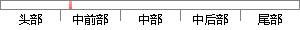

汉代以前，政治主权完全在华夏族，而他族则作为被统治者而同化，汉代以后，政治主权不全在华夏族，而他族或以征服华夏族者而同化，边疆民族带来的草原游牧文化也融于中原文化。
片段位置图

相似结果|
1
原句片段：汉代以前，政治主权完全在华夏族，而他族则作为被统治者而同化，汉代以后，政治主权不全在华
相似片段 1：汉代以前,政治主权完全在华夏族,而他族则作为被统治者而同化,汉代以后,政治主权不全在华夏族,而他族或以征服华夏族者而同化,边疆民族带来的草原游牧文化也融于...
|
※ 片段修改建议 ※
近似词参考：- 汉代：汉朝
- 以前：之前 曩昔
- 完全：彻底 完整
- 华夏：中原
- 同化：夹杂
- 汉代：汉朝
- 以后：今后 之后
- 华夏：中原
- 华夏：中原
- 同化：夹杂
- 中原：华夏
系统自动生成语句：汉朝之前，政治主权彻底在华夏族，而他族则作为被统治者而夹杂，汉朝今后，政治主权不全在华夏族，而他族或以征服华夏族者而夹杂，边疆民族带来的草原游牧文化也融于华夏文化。
注：本片段修改建议为系统自动生成，仅供参考。